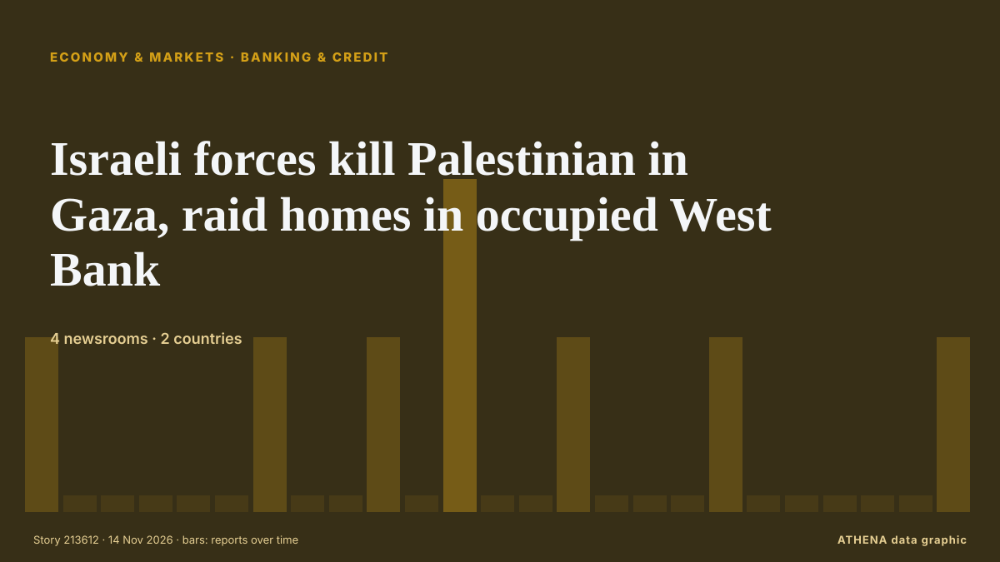

Banking & credit
SponsoredPresented by  Cybernetics and Artificial Intelligence Lab Welcome to the Cybernetics and Artificial Intelligence Laboratory, established at the Department of Business Administration of the National and Kapodistrian University of Athens. The lab is headed by Professor Dimitrios Thomakos. The lab aims to do research that can be published in top venues. Our research uses tools and methods of Artificial Intelligence, and lies in the following areas: - Forecasting - Decision making - Cyber security - Finance We are always looking forward to collaborating with exceptional students!
Cybernetics and Artificial Intelligence Lab Welcome to the Cybernetics and Artificial Intelligence Laboratory, established at the Department of Business Administration of the National and Kapodistrian University of Athens. The lab is headed by Professor Dimitrios Thomakos. The lab aims to do research that can be published in top venues. Our research uses tools and methods of Artificial Intelligence, and lies in the following areas: - Forecasting - Decision making - Cyber security - Finance We are always looking forward to collaborating with exceptional students!
| 1 Nov | 0 |
|---|---|
| 2 Nov | 0 |
| 3 Nov | 0 |
| 4 Nov | 0 |
| 5 Nov | 0 |
| 6 Nov | 0 |
| 7 Nov | 1 |
| 8 Nov | 1 |
| 9 Nov | 0 |
| 10 Nov | 6 |
| 11 Nov | 8 |
| 12 Nov | 6 |
| 13 Nov | 2 |
| 14 Nov | 0 |

Israeli forces kill Palestinian in Gaza, raid homes in occupied West Bank
Two Palestinians killed by Israeli fire in central Gaza, hospital sources say Two Palestinians were killed by Israeli fire east of Deir el-Balah in central Gaza, according to sources at Al-Aqsa… from Middle East Eye
Israeli army, illegal settlers carry out over 1,180 arson attacks in occupied West Bank
The attacks began when Palestinians set fire to an Israeli vehicle near Kibbutz Mitzpe Shalem. from The Jerusalem Post
AMLC files civil forfeiture case vs Romualdez
MANILA, Philippines—The Anti-Money Laundering Council (AMLC) has filed a civil forfeiture case that covers the bank accounts of former House Speaker Martin Romualdez, a witness told the Sandiganbayan… from Philippine Daily Inquirer
Israeli settlers injure Palestinians as army dismantles outposts
Israeli settlers stormed the Palestinian village of Atara and injured five people on Thursday after the military dismantled illegal outposts. from The New Arab
France denies entry for Israeli settler leader: What to know
The head of Israel's Samaria Regional Council settler organization claims that France turned him back at the Paris airport. from Al-Monitor
DOE closes $480-million loan for Arena Energy’s U.S. Gulf shelf redevelopment
The U.S. Dept. of Energy has closed a $480-million loan for Arena Energy’s Project Elkhorn, its first loan for domestic oil and gas production. from World Oil
The Debt Crisis Left a Lasting Mark on Who Owns Wealth in Greece
The debt crisis changed who owns wealth in Greece and five other hard-hit eurozone countries, leaving a greater share in the hands of richer households more than a decade later, according to a new… from Greek Reporter
German regulator fines Deutsche Bank US$8.9 million over Postbank customer migration issues
This follows complaints from individuals who lost access to their funds and had direct debits rejected. from The Business Times
Metro Bank up for sale after turnaround pays off
The high street lender – which has 78 branches across the UK – recently notched up the most profitable half-year in its history. from Evening Standard (London)
How Switzerland’s rescue of a Russian bank went spectacularly wrong
A four-year saga of unpaid debts, feuding owners and legal battles. from Financial Times - Markets
Offshore wind farm will support 130 new Scottish jobs, SSE announces
SSE said it brings the number of Scottish roles linked to its 1.4GW Berwick Bank B project to almost 1,000 so far. from Evening Standard (London)
Pyes Pa fatal crash: Driver dies after vehicle crashes down bank
The Serious Crash Unit attended, and inquiries are underway. from New Zealand Herald
Property investor exodus drives record quarterly fall in Australian home lending
Total new home loans fell 15.5% by value in the September quarter to A$81.16 billion (US$55.6 billion) from The Business Times
Afreximbank, DBN seal $75m financing deal for SMEs
Ms Awani said combining finance with practical support will help businesses prepare for export markets and connect with buyers across Africa and beyond. from Premium Times
‘How To Rob A Bank’ review: Nicholas Hoult is a Gen Z Robin Hood in David Leitch’s fun, forgettable heist movie
Zoe Kravitz, John C Reilly and Pete Davidson also star in the director’s follow-up to ‘The Fall Guy’ and ‘Bullet Train’ from Screen Daily
Goldman, a lead bank on Anthropic’s IPO, sees $685B in revenue by 2030
Goldman Sachs analysts expect Anthropic’s revenue to reach about $685B by 2030, Bloomberg reported. from The Next Web
Vice President commends GACL’s role in Ghana’s economic transformation
Vice President Professor Jane Naana Opoku-Agyemang has commended the Ghana Airports Company Limited (GACL) for its pivotal role in Ghana’s economic transformation through improved airport… from MyJoyOnline
Israel kills 14-year-old Palestinian boy in West Bank, wounds two others in Gaza
Red Crescent says troops blocked ambulance crews from reaching wounded person and detained 3 volunteer medics in Burqa. from Anadolu Agency (English)
Elbasan marks 82nd anniversary of its liberation with tribute to 23 fallen partisans
Elbasan marked the 82nd anniversary of its liberation on Wednesday with a ceremony honouring fallen members of the 15th Assault Brigade. from Euronews Albania (EN)